クロイツェル室内管弦楽団とは...
当楽団は、2000年2月14日に発足致しました。 現在は10人程度の人数で活動を行っています。 主な活動は、年1回開いている定期演奏会と学園祭である紅華祭での演奏の二つです。この二つの行事は私たちにとって、二大イベントであり、特に力を注いで活動に励んでおります。その他にも学内、学外での依頼演奏も受け付けておりますので、現地に足を運んでの演奏も多数行っています。団内の行事では夏や冬に合宿を行うなど盛りだくさんで、設立された先輩方の闘志と情熱を受け継ぎ、日々邁進していく今日この頃でございます。様々なイベントを通してクロイツェルの「音楽」をお伝えしたいと思っております。
◆活動場所
＊部室 サークル棟312
＊公式練習日 火曜日、木曜日の放課後（それ以外は自主練習日）
＊主な練習場所 講義実験棟202、203、204など
講義実験棟の2・3階を中心に活動しています。
毎日誰かしら来部していますので、部室・練習部屋に気軽に足を運んでみて下さい。
◆主な活動
１年の大まかな動きです。その年によって少し変わります。
5月 学生天国でのアンサンブル公演 ：八王子市で開催される学生天国にてアンサンブルを組んで数曲演奏します
6月 団内発表会 ：クロイツェル内部で発表会を行います
8月 夏合宿 ：基礎練習や定演の曲などをメインに3泊4日の合宿を開催します(コロナウィルスの影響にて未定)
10月 紅華祭 ：学園祭を通してアンサンブルをメインとした演奏を行います
2月 直前合宿・定期演奏会 ：定演に向けてラストスパート！一大イベントの定演開催します
○その他各種イベント等で依頼演奏を行っております。
活動実績
過去の演奏会
|
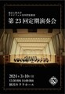 第23回定期演奏会
日時：2024/3/10会場：秋川きららホール 指揮：深山智哉 P.ビゼー：「アルルの女」組曲よりファランドール ドヴォルザーク：交響曲第9番「新世界より」 |
|
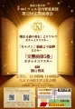 第22回定期演奏会
日時：2023/2/25会場：南大沢文化会館 指揮：深山智哉 P.チャイコフスキー：「眠れる森の美女」よりワルツ G.ビゼー：「カルメン組曲」より抜粋 P.チャイコフスキー：「交響曲第5番」 |
|
20周年記念定期演奏会
日時：2020/2/16会場：オリンパスホール八王子 指揮：深山智哉 J.ブラームス：交響曲第1番 F.シューベルト：交響曲第7番「未完成」 C.M.シェーンベルク：レ・ミゼラブル セレクション J.ブラームス：ハンガリー舞曲第5番（アンコール） |
|
第19回定期演奏会
日時：2019/2/24会場：八王子市芸術文化会館いちょうホール 指揮：深山智哉 バイオリン：田代祐一 L.v.ベートーヴェン：交響曲第6番 ヘ長調 作品68「田園」 F.メンデルスゾーン：ヴァイオリン協奏曲 ホ短調 作品64 J.S.バッハ：ブランデンブルク協奏曲第3番 ト長調BWV1048 第1・3楽章 W.A.モーツァルト：劇場支配人（アンコール） |
|
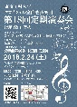 第18回定期演奏会
日時：2018/2/24会場：学園都市センターイベントホール 指揮：深山智哉 J.S.バッハ：2つのヴァイオリンのための協奏曲 P.L.チャイコフスキー：弦楽セレナーデより第1・4楽章 W.A.モーツァルト：交響曲第40番 G.ビゼー：「カルメン」第一組曲より「闘牛士」（アンコール） |
|
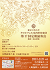 第17回定期演奏会
日時：2017/2/25会場：ひの煉瓦ホール 指揮：深山智哉 E.エルガー：威風堂々 R.ワーグナー：楽劇「ニュルンベルクのマイスタージンガー」より、第１幕への前奏曲 L.v.ベートーヴェン：交響曲第７番イ長調作品92 E.エルガー：愛の挨拶（アンコール） |
|
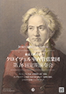 第16回定期演奏会
日時：2016/3/5会場：南大沢文化会館 指揮：深山智哉 ベートーヴェン：交響曲第５番「運命」 メンデルスゾーン：真夏の夜の夢より「結婚行進曲」 シベリウス：「フィンランディア」 シベリウス：組曲「カレリア」より第３曲「行進曲風に」（アンコール） |
|
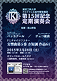 第15回記念定期演奏会
日時：2015/2/28会場：オリンパスホール八王子 指揮：深山智哉 サーンス：バッカナール ドヴォルザーク：チェコ組曲 チャイコフスキー：交響曲第5番 ホ短調op.68 くるみ割り人形より花のワルツ（アンコール） シュトラウス：ラデツキー行進曲（アンコール） |
|
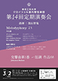 第14回定期演奏会
日時：2014/3/2会場：八王子市芸術文化会館いちょうホール 指揮：深山智哉 久石譲：「Melodyphony」より ブラームス：交響曲第1番 ハ短調op.68 ブラームス：ハンガリー舞曲第5番（アンコール） |
|
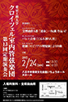 第13回定期演奏会
日時：2013/2/24会場：八王子市芸術文化会館いちょうホール 指揮：深山智哉 ベートーヴェン：交響曲第5番「運命」ハ短調op.67 チャイコフスキー：バレエ音楽「くるみ割り人形」 ロッシーニ：歌劇「セリビアの理髪師」より序曲 喜歌劇「天国と地獄」より序曲（アンコール） |
|
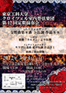 第12回定期演奏会
日時：2012/3/4会場：八王子市芸術文化会館いちょうホール 指揮：深山智哉 ドヴォルザーク：交響曲第8番 ト長調op.88 ビゼー：歌劇「カルメン」より チャイコフスキー：スラブ行進曲変ロ短調op.31 アルルの女 第２組曲よりファランドール（アンコール） |
|
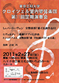 第11回定期演奏会
日時：2011/2/27会場：八王子市芸術文化会館いちょうホール 指揮：吉田 巧 ベートーヴェン：交響曲第7番イ短調op.92 ヴェルディ：歌劇「ナブッコ」序曲 シューベルト：交響曲第7番 ロ短調D759「未完成」 シベリウス：組曲「カレリア」より第３曲「行進曲風に」（アンコール） |
|
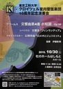 10周年記念演奏会
日時：2010/10/30会場：杜のホールはしもと 指揮：伊藤彰教 ブラームス：交響曲第4番 ホ短調op.98 シベリウス：交響詩「フィンランディア」より チャイコフスキー：幻想序曲「ロメオとジュリエット」 エルガー：希望と栄光の国（スペシャルアンコール） シュトラウス：ラデツキー行進曲（アンコール） |
|
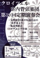 第10回定期演奏会
日時：2010/2/28会場：八王子市芸術文化会館いちょうホール 指揮：深山智哉 ハチャトゥリアン：仮面舞踏会 ドヴォルザーク：交響曲第9番「新世界より」 F.シューベルト：ロザムンデ序曲 シュトラウス：ラデツキー行進曲（アンコール） |
|
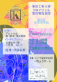 第9回定期演奏会
日時：2009/2/22会場：八王子市芸術文化会館いちょうホール 指揮：伊藤彰教 ビゼー：アルルの女第1組曲・第2組曲 メンデルスゾーン：交響曲第1番ハ短調op.11 シベリウス：組曲「カレリア」より第３曲「行進曲風に」（アンコール） |
|
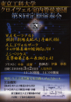 第8回定期演奏会
日時：2008/3/2会場：八王子市芸術文化会館いちょうホール 指揮：伊藤彰教 チェロ：中林成爾 モーツァルト：歌劇「劇場支配人」序曲K.486 ドヴォルザーク：チェロ協奏曲ロ短調op.104 シベリウス：交響曲第2番ニ長調op.43 （アンコールなし） |
|
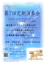 第7回定期演奏会
日時：2007/2/25会場：調布市グリーンホール 指揮：伊藤彰教 ファゴット：深山智哉 ベートーヴェン：劇音楽≪エグモント≫序曲op.84 ウェーバー：ファゴット協奏曲ヘ長調op.75 チャイコフスキー：交響曲第5番ホ短調op.64 ブラームス：ハンガリー舞曲集WoO.1より 第一番ト短調（アンコール） |
|
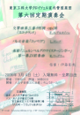 第6回定期演奏会
日時：2006/3/4会場：八王子市芸術文化会館いちょうホール 指揮：伊藤彰教 ワーグナー：楽劇「ニュルンベルクのマイスタージンガー」第一幕より前奏曲 ドリーブ：バレエ音楽「コッペリア」 メンデルスゾーン：交響曲第3番イ短調 op.56「スコットランド」 チャイコフスキー：花のワルツ（アンコール） |
|
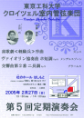 第5回定期演奏会
日時：2005/2/27会場：杜のホールはしもと 指揮：伊藤彰教 ヴァイオリン：吉田巧 スッペ：喜歌劇「軽騎兵」序曲 メンデルスゾーン：ヴァイオリン協奏曲ホ短調 ブラームス：交響曲第2番ニ長調 シュトラウスⅡ世：アンネン・ポルカ（アンコール） |
|
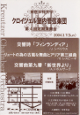 第4回定期演奏会
日時：2004/3/7会場：八王子市芸術文化会館いちょうホール 指揮：伊藤彰教 シベリウス：交響詩「フィンランディア」 レスピーギ：リュートの為の古風の舞曲とアリア ドヴォルザーク：交響曲第9番「新世界より」 アンダーソン：シンコペイティッドクロック（アンコール） |
|
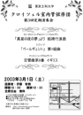 第3回定期演奏会
日時：2003/3/1会場：八王子市芸術文化会館いちょうホール 指揮：伊藤彰教 メンデルスゾーン：結婚行進曲 グリーグ：ペールギュント第1組曲 ドヴォルザーク：交響曲第8番「イギリス」 ブラームス：ハンガリー舞曲第5番（アンコール） |
|
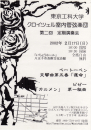 第2回定期演奏会
日時：2002/2/17会場：八王子市芸術文化会館いちょうホール 指揮：伊藤彰教 ビゼー：カルメン第1組曲 ベートーベン：交響曲第5番「運命」 エルガー：威風堂々（アンコール） |
|
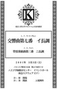 第1回定期演奏会
日時：2001/3/3会場：八王子学園都市センター 指揮：伊藤彰教 ベートーベン：交響曲第7番 J.S.バッハ：管弦楽組曲第3番 J.S.バッハ：管弦楽組曲第3番より「アリア」（アンコール） |